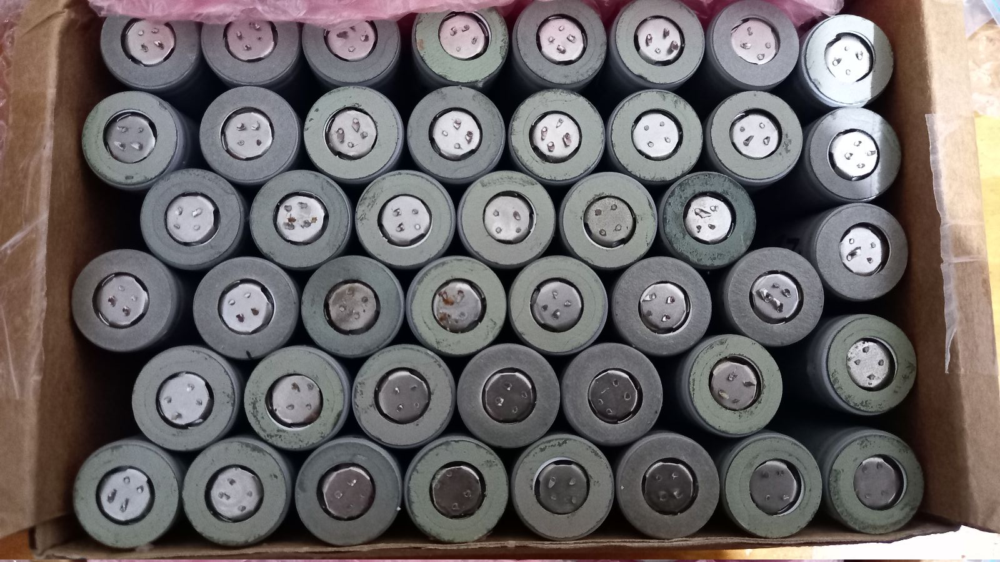
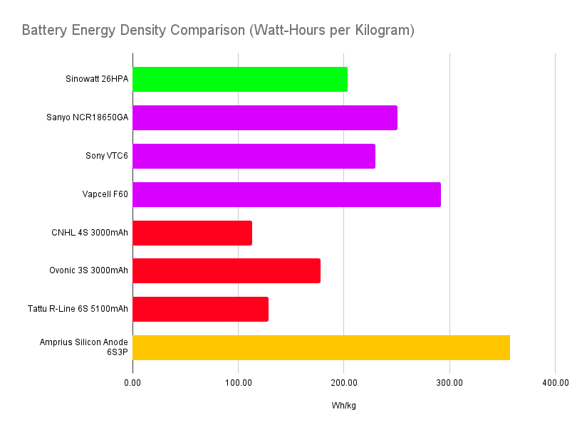
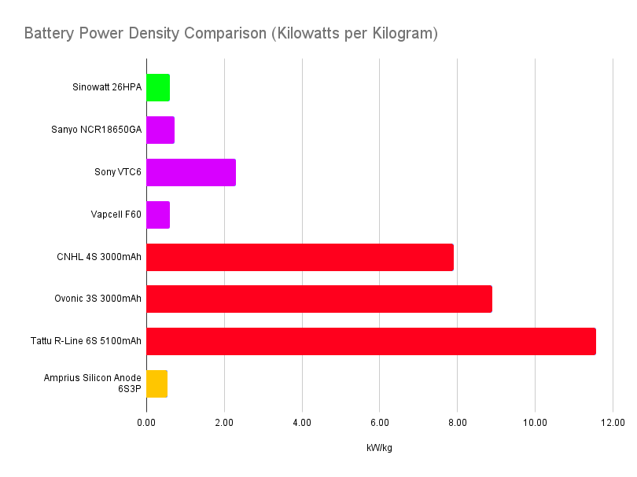
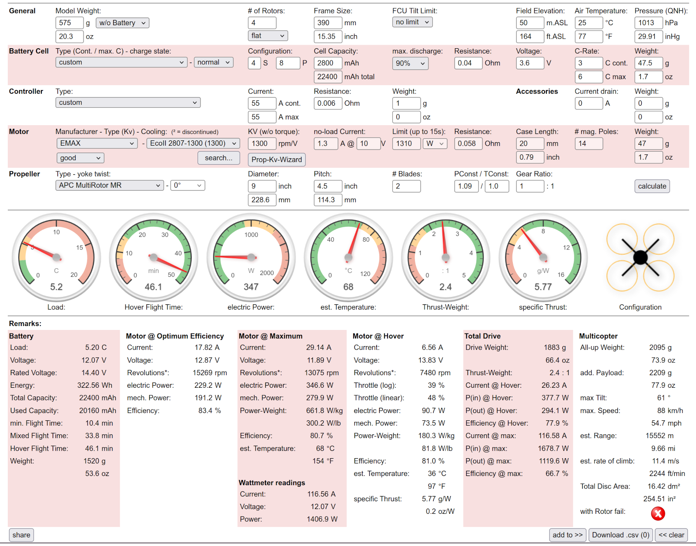
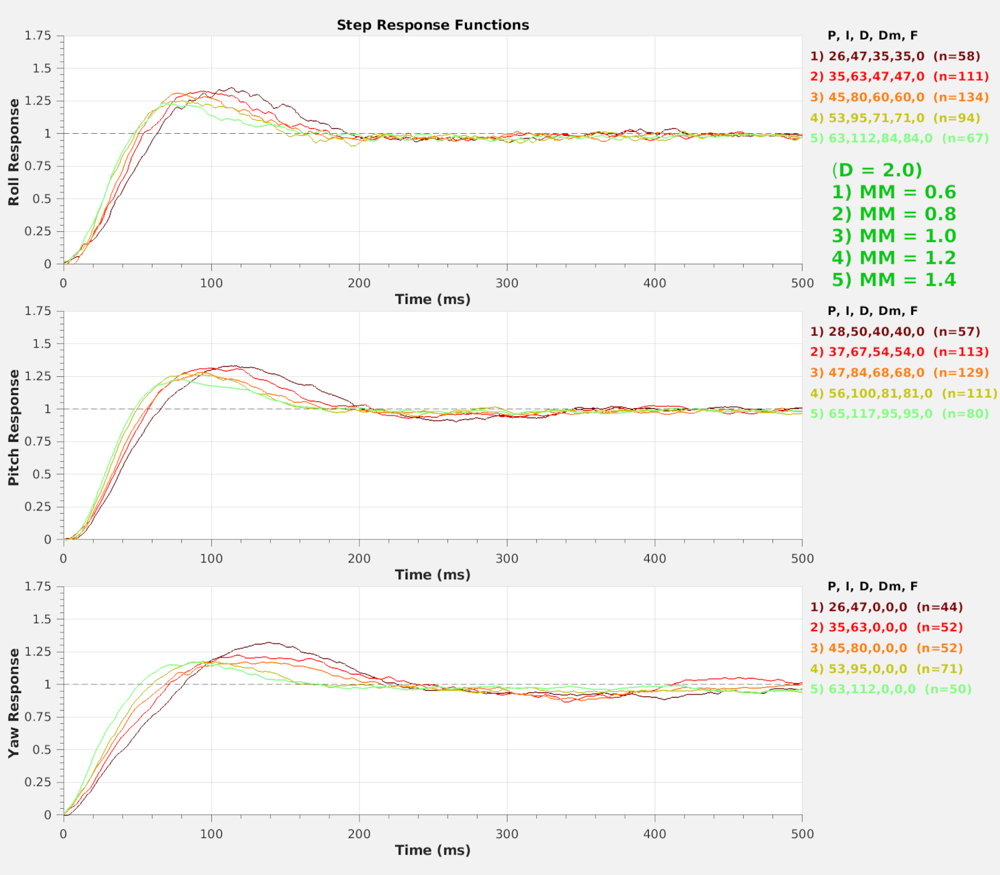
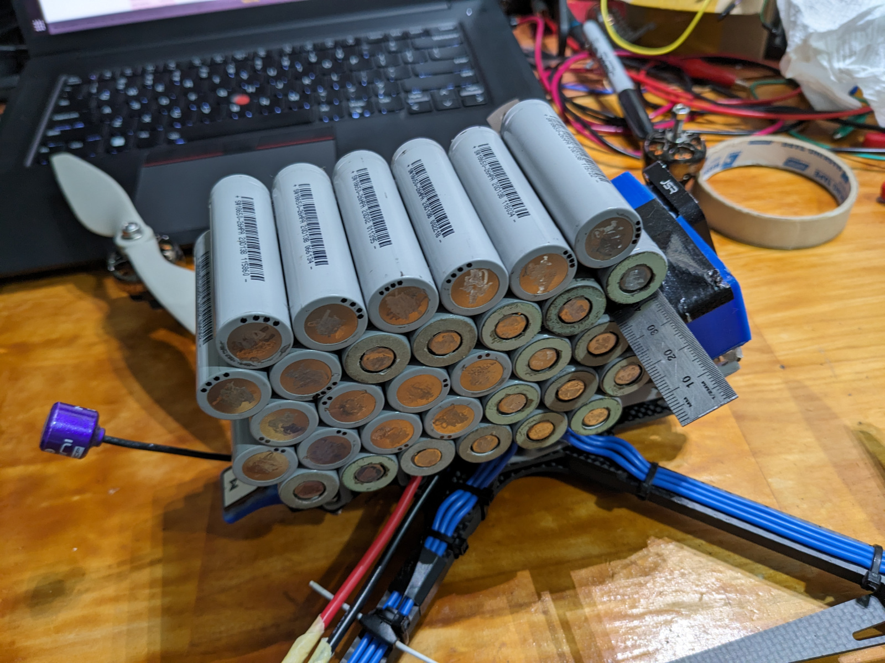
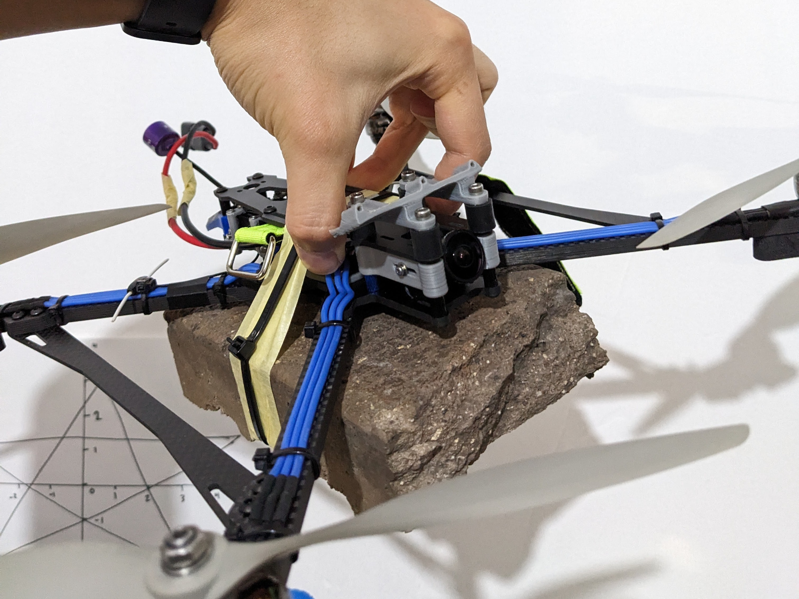

Putting propellers on a battery pack

This is a box of 18650 cells, previously used by someone in a DIY eBike project. They appeared to be Sinowatt 26PHA cells, 2600 mAh with a 7.8A max continuous discharge rating.
While nowhere near the highest-performing 18650s by any measure, these were still quite capable cells and well worth the low price. In addition to this, they still had an energy density higher than the high discharge li-po packs I typically use for drones:


On the left chart above is a comparison of energy densities (how much energy they store per unit weight) of a few different batteries. The batteries I had (green) don't have as high an energy density as other cylindrical li-ion cells (purple), but they still outperformed high discharge pouch cell li-po batteries (red).
The right chart is a comparison of rated power density (maximum continuous discharge per unit weight). This is a less helpful chart, as each manufacturer will rate their batteries using different metrics. While cylindrical cells (purple) do typically have lower power density than their pouch counterparts, manufacturers will also rate their max discharge lower to limit temperatures and improve cycle life metrics. On the other hand pouch cell li-pos intended for drones are assumed to have ample airflow for cooling, so manufacturers will inflate discharge ratings to appear more attractive than competitors, especially since cycle life is typically a lower priority for this application. Arguably internal resistance would be a better metric for comparing power density, but it isn't as easily translated to load handling capability.
For fun, I included the Amprius Silicon Anode battery (gold) at the bottom, as it is one of the highest energy density batteries currently on the market. However, it comes with a steep price tag of over $3300 (AUD) and has to be imported from the US. In contrast, equivalent capacity 12V 50Ah LiFePO4 batteries can be purchased on eBay for under $200 from local retailers (shipping included).
I wanted to use these cells to build an FPV platform that could fulfil a niche I was lacking: long range / high endurance. Admittedly a more elegant solution could be had, but my box full of 18650s looked like a straightforward proverbial hammer to my problem. I was much more familiar with multirotors than fixed wing platforms, and was prepared to go down this route
Bi-blade props were selected for efficiency, and a 9" diameter was chosen as a balance between parts availability and maximising rotor size to increase efficiency. A quadcopter design was chosen as it was the minimum number possible for stable flight without articulating rotors, also to increase efficiency.

The resultant quadcopter was unlike any I had designed and built previously; each of the 9" rotors was larger than an entire 3" class quadcopter. These rotors generated over a kilogram of thrust each at full tilt, and considering its weight of just under 2kg gave it a maximum thrust to weight ratio over 2:1. Despite my initial apprehension to it, it would actually be classed as a "very small" drone according to CASA's drone weight categories for the purposes of operator accreditation requirements.
As for the thrust to weight ratio of over double, I would actually consider this close to the minimum for an FPV multirotor craft. To give some context, my standard, fairly average 5" class quadcopter probably has a thrust to weight ratio in excess of 5:1. (It's able to ascend directly upwards almost as fast as it is able to fly forward). This flying battery truck on the other hand handles like a brick, requiring ample room to pull out of dives. Furthermore, the sheer number of batteries stacked up on it meant a unfamiliarly high moment of inertia, and I've never had to raise the PID gains on a flight controller as high as I did for this craft, just to counteract the angular momentum and maintain stability using the relatively underpowered powertrain. The chart below shows an initial pass during controller tuning, where I still saw overshoot despite reaching the maximum recommended Derivative gains. I would later have to sacrifice controller responsiveness to bring this within desirable limits.


